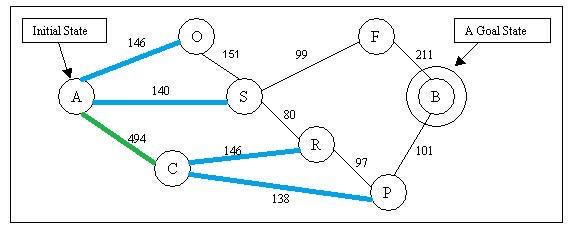
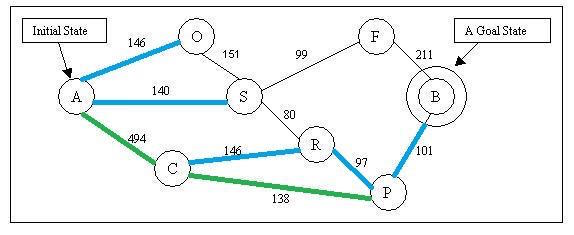
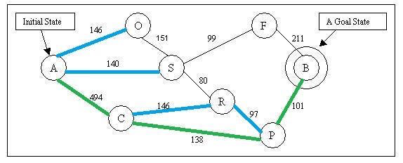

What is greedy-best first search?
As what we said earlier, the greedy best-first search algorithm tries to explore the node that is closest to the goal. This algorithm evaluates nodes by using the heuristic function h(n), that is, the evaluation function is equal to the heuristic function, f(n) = h(n). This equivalency is what makes the search algorithm ‘greedy.’
Now let’s use an example to see how greedy best-first search works Below is a map that we are going to search the path on. For this example, let the valuation function f(n) simply be equal to the heuristic function h(n).

This is a map of a city. We are going to find out a path from city A to city B.

This graph shows the straight distance from each city to city B. The straight distances serve as each cities’ h(n) in this example.
Because f(n) = h(n) our algorithm will at every stage choose to explore the node that we know is closest to our goal.
Let’s assume cities on the map as nodes and path between cities as edges. If you Start exploring at node A, we have node O, S and C reachable now.

According to the estimate function f(n) = h(n), and given by the graph of h(n) values above: Node O’s f(n) = 380, Node S’ f(n) = 253, Node C’s f(n) = 160. The algorithm will choose to explore node C. After explored C, we have new node R and P reachable now.

According to the estimate function f(n): Node O’s f(n) = 380, Node S’ f(n) = 253, Node R’s f(n) = 193, Node P’s f(n) = 100. The algorithm will choose node P to explore. After explored C, we have new node B reachable now.

According to the estimate function f(n): Node O’s f(n) = 380, Node S’ f(n) = 253, Node R’s f(n) = 193, Node B’s f(n) = 0. The algorithm will choose node B to explore. After explored B, we have reached our goal state. The algorithm will be stopped and the path is found.

Note that in this example, the distance between the current node and next node does NOT inform our next step, only the heuristic given by the distance between potential nodes to the goal.
One can generalize the evaluation function of a target node to be a weighted sum of the heuristic function and the distance from the current node to that target, which could produce a different result.